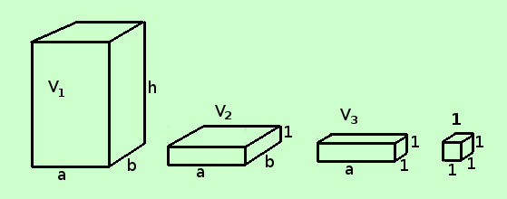

|
Procediamo ora a calcolare il primo volume: per questo abbiamo bisogno del teorema: Due parallelepipedi rettangoli aventi le basi congruenti hanno i volumi proporzionali alle rispettive altezze Se hai bisogno della dimostrazione  Dimostriamo il teorema: Il volume del parallelepipedo rettangolo si misura con il prodotto delle sue tre dimensioni V = a·b·h Consideriamo il parallelepipedo rettangolo di dimensioni a, b e h di volume V1 ed anche il parallelepipedo rettangolo di dimensioni a, b e 1 di volume V2; per il teorema di inizio pagina posso scrivere
Consideriamo poi il parallelepipedo rettangolo di dimensioni a, b e 1 di volume V2 ed anche il parallelepipedo rettangolo di dimensioni a, 1 e 1 di volume V3; per il teorema di inizio pagina posso scrivere
Consideriamo infine il parallelepipedo rettangolo di dimensioni a, 1 e 1 di volume V3 ed anche il parallelepipedo rettangolo di dimensioni 1, 1 e 1 di volume 1 (unita' di misura); per il teorema di inizio pagina posso scrivere
Adesso prendiamo le tre uguaglianze e moltiplichiamo fra loro i termini prima dell'uguale e tra loro i termini dopo l'uguale
V1 = a·b·h e, generalizzando, per un generico volume V
Come volevamo Siccome l'area del rettangolo di base si trova facendo Asb = a·b avremo la formula
Il volume del parallelepipedo rettangolo si trova moltiplicando l'area di base per la misura dell'altezza Infine vediamo il volume del cubo che possiamo considerare come un parallelepipedo rettangolo con le tre dimensioni uguali l = a = b = c
|

|

|

|

|